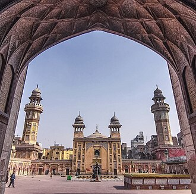

PrésentationتقديمOverview
La mosquée de Wazir-Khan est une mosquée de Lahore. Elle fut construite sous le règne de Shah Jahan, en 1634, par le gouverneur de la province du Pendjab, qui répondait au nom de Nawab Wazir Khan.
The Wazir Khan Mosque is a 17th-century Mughal mosque located in the city of Lahore, Punjab, Pakistan. The mosque was commissioned by the then governor of Lahore, Wazir Khan, during the reign of the Mughal emperor Shah Jahan as a part of an ensemble of buildings that also included the nearby Wazir Khan Hammam baths. Construction of the mosque began in 1634, and was completed in 1641.
Vezir Han Camii, Pakistan'ın Lahor kentinde bulunan bir camidir. 17. yüzyılda Babür İmparatorluğu döneminde inşa edilmiş olup Lahor Surları'nın eteklerinde yer almaktadır. Cami avlusunun girişi ve yapının ön cephesi, Vezir Han Meydanı'na bakmaktadır.
Masjid Kekhanan Wazir adalah masjid abad ke-17 yang terletak di kota Lahore, ibu kota Pakistan provinsi Punjab. Masjid ini difungsikan selama pemerintahan kaisar Mughal, Shah Jahan. Masjid ini merupakan bagian dari sebuah tatanan bangunan, yang juga termasuk di dalamnya pemandian Shahi Hammam. Pembangunan Masjid Wazir Khan dimulai pada tahun 1634 masehi, dan selesai pada tahun 1641.
مسجد وزیر خان شہر لاہور میں دہلی دروازہ، چوک رنگ محل اور موچی دروازہ سے تقریباً ایک فرلانگ کی دوری پر واقع ہے۔ یہ مسجد نقش ونگار میں کاریگری کا منہ بولتا ثبوت ہے۔ علم الدین انصاری جو عام طور پر نواب وزیر خان کے نام سے جانے جاتے ہیں سلطنت مغلیہ کے عہد شاہجہانی میں لاہور شہر کے گورنر تھے اور یہ مسجد انہی کے نام سے منسوب ہے۔ مسجد کی بیرونی جانب ایک وسیع سرائے ہے جسے چوک وزیر خان کہا جاتا ہے۔ چوک کے تین محرابی دروازے ہیں۔ اول مشرقی جانب چٹا دروازہ، دوم شمالی جانب راجا دینا ناتھ کی حویلی سے منسلک دروازہ، سوم شمالی زینے کا نزدیکی دروازہ-مسجد کے مینار 107 فٹ اونچے ہیں۔ اس مسجد کی تعمیر دسمبر 1641ء میں سات سال کی طویل مدت کے بعد پایۂ تکمیل کو پہنچی۔ مسجد وزیر خان سلطنت مغلیہ کے عہد میں تعمیر کی جانے والی اب تک کی نفیس کاشی کار و کانسی کار خوبصورت مسجد ہے جو بادشاہی مسجد کی تعمیر سے 32 سال قبل تکمیل کو پہنچی۔
Die Wazir-Khan-Moschee ist eine Moschee in der Altstadt von Lahore, Pakistan. In den Jahren 1634 bis 1641 auf Anordnung von Wazir Khan erbaut, dem Gouverneur von Punjab während der Mogulzeit. Sie gilt sie als eines der bedeutendsten Werke der indo-islamischen Sakralarchitektur der Mogulzeit und als eine der wichtigsten Sehenswürdigkeiten der Stadt. Seit 1993 befindet sich die Moschee auf der Tentativliste für das UNESCO-Welterbe. Die Moschee ist vollständig aus geschnittenen und zugerichteten Ziegeln aus Kankar-Kalk gebaut, mit einem spärlichen Gebrauch von rotem Sandstein am Tor und im Querschiff. Bekannt ist die Moschee für ihre reiche Verzierung, darunter Fayence-Fliesen, prachtvolle Fresken und Koransprüche in arabischer Kalligrafie.
La mezquita de Wazir Khan es una mezquita del siglo XVII ubicada en la ciudad de Lahore, capital de la provincia paquistaní de Punjab. La mezquita fue encargada por el jefe médico de la corte durante el reinado del emperador mogol Shah Jahan como parte de un conjunto de edificios que también incluía los baños cercanos Shahi Hammam. La construcción de la mezquita de Wazir Khan comenzó en 1634 y se completó en 1641.
La Moschea Wazir Khan è una moschea del XVII secolo situata nella città di Lahore, capitale della provincia pakistana del Punjab, in Pakistan.
瓦齊爾汗清真寺 是一座位於巴基斯坦旁遮普省省會拉合爾市的17世紀清真寺。清真寺在莫臥兒皇帝沙贾汉在位期間連同包括拉合尔皇家浴室等建築一併建造。清真寺在1634年開始動工建造，並在1641年完工。
Мечеть Вазир Хана — мечеть, расположенная в Лахоре (Пакистан). Строительство продолжалось семь лет, начиная примерно с 1634—1635 годов, во времена правления императора Великих Моголов Шах Джахана. Мечеть была построена по приказу губернатора Лахора, известного как Вазир Хан.
มัสยิดวะซีร์ ข่าน เป็นมัสยิดสร้างขึ้นในศตวรรษที่ 17 ตั้งอยู่ในนครลาฮอร์ แคว้นปัญจาบ ประเทศปากีสถาน สร้างขึ้นภายใต้ดำริของจักรพรรดิโมกุล ชาห์จะฮาน เพื่อเป็นส่วนหนึ่งของหมู่สิ่งก่อสร้างที่รวมถึงชาฮีฮัมมัน มัสยิดเริ่มก่อสร้างในปี 1634 แล้วเสร็จในปี 1641 ปัจจุบันได้รับการขึ้นทะเบียนเป็นรายชื่อแหล่งมรดกโลกเบื้องต้น
Sur la carteعلى الخريطةOn the map
Documents et liensوثائق وروابطDocuments and links
- Wikipédia — Français
- Wikipédia — العربية
- Wikipédia — English
- Wikipédia — Türkçe
- Wikipédia — Bahasa Indonesia
- Wikipédia — اردو
- Wikipédia — Deutsch
- Wikipédia — Español
- Wikipédia — Italiano
- Wikipédia — 中文
- Wikipédia — Русский
- Wikipédia — ไทย
- Wikidata — Q2352054
Données : Wikidata (CC0), mises à jour tous les 3 mois. L'année est la plus ancienne date de construction connue du bâtiment : pour un édifice devenu mosquée plus tard (comme Sainte-Sophie), c'est celle du bâtiment d'origine. Photos : Wikimedia Commons, auteur et licence sur la page de chaque photo.البيانات: ويكي بيانات (CC0)، تُحدَّث كل 3 أشهر. السنة هي أقدم تاريخ معروف لبناء المبنى: فإن صار مسجدًا لاحقًا (مثل آيا صوفيا) فهي سنة المبنى الأصلي. الصور: ويكيميديا كومنز، المؤلف والرخصة في صفحة كل صورة.Data: Wikidata (CC0), updated every 3 months. The year is the earliest known construction date of the building: for a building that became a mosque later (such as Hagia Sophia), it is that of the original building. Photos: Wikimedia Commons, author and licence on each photo's page.
Grandes mosquées du mondeالجوامع الكبرى في العالمGreat mosques of the world →